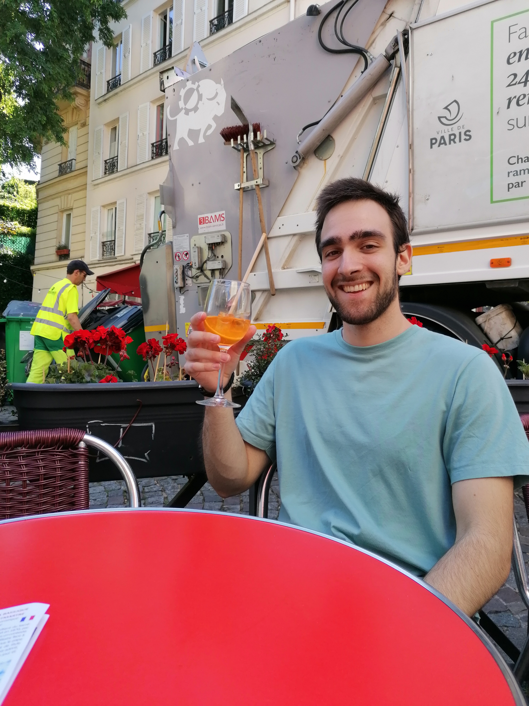

La jeunesse de Gabriel
Gabriel Dautreppe est né le 29 mars 2003 à Paris. Il a de nombreux problèmes de santé étant nourisson et doit donc suivre un traitement difficile. En grandissant, le mal s'estompe peu à peu et Gabriel peut enfin s'amuser comme quelqu'un de son âge. Enfant curieux, il découvre et touche à tout ce qui est à sa disposition. Il découvre la musique et le sport en se donnant l'objectif de perfectionner ses compétences dans le futur. Avec ses grands-parents espagnols et italiens, Gabriel voyage beaucoup et ses rencontres lui ont permis de s'ouvrir au monde. Il vit maintenant seul dans son appartement à Puteaux, espérant se faire un nom dans le développement web.
Un homme passioné
Depuis qu'il est enfant, Gabriel développe un amour inconditionnel pour la musique. Il apprend au début de manière autodidacte le piano et cherche à composer lui-même de petits morceaux. Le basculement va être le MAC familial dans lequel Gabriel va découvrir le beatmaking. Il continue actuellement sur cette voie et collabore avec d'autres artistes pour sortir des projets sous le nom de TENSAÏ. Les sports de combat font aussi partie des passions de Gabriel. Le karaté, la boxe et le MMA n'ont plus de secrets pour lui tant il les pratique depuis son enfance.
